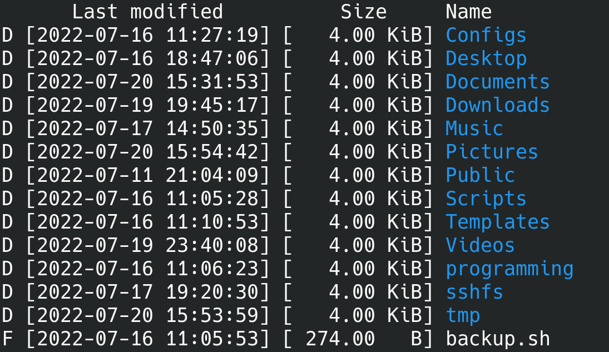

The "v" in "vls" is a randomly chosen letter.
If you often work with the console and also work on GNU/Linux and Windows, you probably want a unified solution for listing files.
If you have been working on a Windows computer for a long time and the first few times you write "dir" instead of "ls" on a GNU/Linux system and vice versa, this is annoying.
Furthermore, "ls" and "dir" do not generate the same output.
In most GNU/Linux distributions, "ls" gives colored output.
While "dir" really only provides white output.
With these "problems" in mind I wanted a unified solution.
First I researched if there are crossplatform Rust libraries to generate colored output on GNU/Linux as well as on Windows.
With this research I found termcolor.
This is a Rust library with which I can provide colored output on both systems without having to manually pay attention to the operating system in the code.
Here is an example of how vls output looks like:
